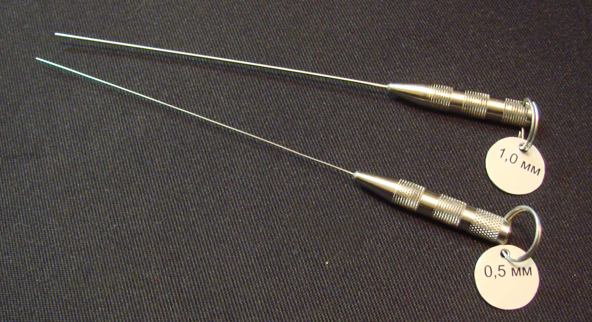

Для перехода щелкните по ссылке на желтом фоне:
ЩУПЫ КРУГЛЫЕ "ИНТЕРБАЛТ"
Щупы круглые "ИнтерБалт" предназначены для замера зазоров между
криволинейными поверхностями (между профилем вагонного, локомотивного колеса и рабочей
поверхностью шаблона, в консервном производстве, при ремонте
автомобилей, при регулировке зазоров между контактами электрических
аппаратов и т. п.).
Щупы круглые "ИнтерБалт" могут использоваться совместно со щупами
плоскими в местах, где это позволяет форма криволинейных поверхностей и
габариты рабочей зоны в месте замера.
Щупы круглые "ИнтерБалт"выпускаются следующих типов (для подробного просмотра щелкните по ссылке):

Тип 2 - прямой с кольцом или с пластмассовой ручкой
Тип 3 - изогнутый с кольцом или с пластмассовой ручкой
 Тип 4 - изогнутый с металлической или с пластмассвой ручкой
Тип 4 - изогнутый с металлической или с пластмассвой ручкой
Для перехода щелкните по ссылке на желтом фоне: